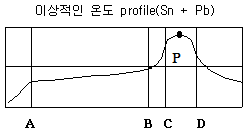
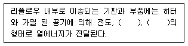
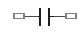
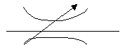

전자부품장착기능사 (2014-07-20 기출문제)
1과목: SMT 개론
1. SMT실장 시 칩 날림(결품) 불량이 자주 발생하고 있는 상황에서 조치 프로세서로 적절하지 못한 경우는? (단, Vision 설비 기준이다.)
- A씨는 I/O 체크 메뉴 상에서 수동으로 버큠을 On 한 후 Nozzle 끝단 진공상태를 확인하였다.
- B씨는 부품형태 DB에서 T(두께) 값을 실 두께보다 1.5배로 재설정하였다.
- C씨는 Program Editor 상에서 Place Z Offset 값을 약간 내렸다.
- D씨는 부품 DB에서 (일부설비: Paramater) 설비사가 추천하는 Air Blow값으로 되어있는지 확인하였다.
(정답률: 81%)

2. 인쇄 불량 현상과 원인의 연결이 옳지 않은 것은?
- 납량 과다 인쇄 – 스퀴지 인가 압력 과다
- 크림솔더 칙소성 불량 – 인쇄 형상 퍼짐(늘어짐) 변형
- 마스크 충진 불량 – 인쇄 로링성 부족
- 솔더 볼 발생 – 메탈 마스크 세척 미실시
(정답률: 62%)
3. 스퀴지의 작업조건에 대한 내용으로 옳은 것은?
- 스피드를 높이면 롤링이 좋아진다.
- 인쇄 속도가 느릴 경우 충진이 나빠진다.
- 스퀴지의 각도는 일반적으로 45-70도가 사용되고 있다.
- 스퀴지 스피드가 빨라지면 크림솔더를 기판 위에 누르는 힘이 적어진다.
(정답률: 78%)
4. 기판의 인식마크(fiducial mark)에 대한 설명으로 옳지 않은 것은?
- 기판마크 위치를 카메라로 인식하여, 장착위치를 보정하기 위한 것이다.
- 인식마크의 형상은 원형(元型)의 1가지로만 제작이 가능하다.
- 인식마크의 재질은 동박, solder 도금 등 다양화 할 수 있다.
- 기판의 재질에 따라 인식마크를 선명하게 식별할수 있는 밝기가 달라진다.
(정답률: 88%)
5. 표면실장 인라인 검사공정 구성과 관련이 없는 것은?
- 인쇄 검사
- 장착 검사
- ICT 검사
- 납땜 검사
(정답률: 84%)
6. 부품 오장착을 방지하기 위한 대책으로 거리가 먼 것은?
- 바코드 부착 관리
- 부품 교환 시 규격 확인
- 부품 리스트 부착
- 카세트 검사 및 교정
(정답률: 82%)
7. 표면 실장기 중 회전하는 핸드 유닛을 12~16개 사용하여 고속실장용에 사용하는 방식은 무엇인가?
- 로봇(Robot) Type
- 로타리(Rotary) Type
- 갠트리(Gentry) Type
- 모듈러(Moduler) Type
(정답률: 72%)
8. 실장 부품이 인쇄 회로 기판에 삽입 될 때에 실장 부품의 핀이 삽입되는 홀 주위에 입혀지는 얇은 구리박막을 무엇이라고 하는가?
- 리드
- 랜드
- 비아
- 배선
(정답률: 82%)
9. 전자 부품 실장 후 솔더 양이 많아 전극부위 이상으로 덮인 상태의 불량을 무엇이라 하는가?
- 솔더 쇼트
- 솔더 과다
- 솔더 볼
- 솔더 과소
(정답률: 88%)
10. 다음 중 장착 공정에서 발생할 수 있는 불량에 속하지 않는 것은?
- 과납
- 역삽
- 틀어짐
- 부품 깨짐
(정답률: 76%)
11. 리플로우(Reflow)가열 방식 중 표면실장용으로 잘 사용하지 않는 방식은?
- 증기(VPS) 가열방식
- 적외선(IR)가열방식
- 열풍(Hot Air) 가열방식
- 적외선(IR) + 열풍(Hot Air) 가열방식
(정답률: 82%)
12. 리플로우 솔더링 기계에 대한 설명이 아닌 것은?
- 솔더 크림 인쇄 후 부품이 실장 된 PCB에 열을 가해 납땜 작업을 위한 설비이다.
- 방식으로는 대류(열풍), 적외선, 대류+적외선, VPS등이 있다.
- 납땜부 기판 온도는 최대 250℃ 이하로 한다.
- Flux 도포 방식에는 발포식, Wave식, Spray식 등이 있다.
(정답률: 79%)
13. 부품의 미세화, 고밀도화에 따라 발생 정도가 많은 결함중의 하나로 인접 랜드(land) 간에 납이 연결된 불량 유형은?
- 솔더볼
- 맨하탄
- 브리지
- 휘스커
(정답률: 76%)
14. 그림과 이상적 온도 profile 중 c-d구간 내 P점의 온도로 알맞은 것은?

- 120~150℃
- 150~190℃
- 210~230℃
- 250~280℃
(정답률: 84%)
15. 인쇄공정에 관한 설명으로 옳지 않은 것은?
- 메탈 마스크와 솔더의 점착력이 강해야 한다.
- PCB와 솔더의 점착력이 강해야 한다.
- PCB와 메탈 마스크 사이에 부압이 형성되어야 한다.
- 메탈 마스크 표면에 대기압력이 작용한다.
(정답률: 73%)
16. 박형 QFP가 수분을 흡수한 상태로 리플로우 솔더링을 했을 때 발생하는 불량은?
- 브릿지
- IC Package 크랙
- 기판 크랙
- 톰스톤(맨하탄)불량
(정답률: 75%)
17. SMT공정에 사용되는 기자재에 대한 설명으로 옳지 않은 것은?
- 칩 카운터-칩 부품과 Axial radial 부품을 카운트 하는 디지털 계수기
- 테이프 커터기-부품 Reel의 폐 테이프를 자동 절단하여 모으는 장치
- 인버터-PCB양면 작업을 위해 180° 반전하는 장비
- 터닝 컨베이어(TC)-작업자의 편의를 위해 자동으로 PCB의 전후를 돌려주는 장비
(정답률: 73%)
18. 솔더에 포함되는 불순물에 의한 나쁜 영향을 설명한 것으로 옳지 않은 것은?
- 브릿지 발생
- 표면광택 저하
- 솔더의 젖음성 저하
- 솔더 산화물(dross)감소
(정답률: 66%)
19. 플럭스의 역할로 옳지 않은 것은?
- 청정화
- 산화 방지
- 재산화 방지
- 세척 방지
(정답률: 87%)
20. Solder Paste 및 칩 Bond가 도포된 PCB Chip 부품을 납땜 또는 경화시키는 장치는?
- 리플로우(Reflow)
- 언로더(Unloader)
- 스크린 프린트(Screen Printer)
- 이형 칩 마운트(Multi Chip Mounter)
(정답률: 74%)
2과목: 전자기초
21. SMT실장 부품 CHIP_R10⑤의 정확한 수치 해석으로 옳은 것은?
- 가로:10.0mm 세로:5mm
- 가로:1.0inch 세로:5.0inch
- 가로:10.0mm 세로:0.5mm
- 가로:0.5inch 세로:1.0inch
(정답률: 72%)
22. 괄호 안에 들어갈 용어로 옳은 것은?

- 대류, 복사
- 대류, 반사
- 반사, 집광
- 복사, 집광
(정답률: 86%)
23. 다음 표면실장공정에서 자기보정(self alignment)의 효과를 기대할 수 있는 공정은?
- 프린터 공정
- 리플로우 공정
- 마운터 공정
- 검사공정
(정답률: 71%)
24. 다음 중 가장 발전된 전자부품 실장방식은?
- COB(Chip On Board)
- MCM(Multi Chip Module)
- MMT(Mixed Mount Tech.)
- SMT(Surface Mount Tech.)
(정답률: 70%)
25. 표면실장기술의 차세대 기술로서 Bare IC Chip을 직접기판에 탑재하여 회로접속을 행하는 기법은?
- DIP
- SOP
- QFP
- COB
(정답률: 67%)
26. 인쇄공정의 불량 유형으로 옳지 않은 것은?
- 미납
- 무너짐
- 솔더 번짐
- 위치 틀어짐
(정답률: 59%)
27. 리플로 납땜시 부품 내부에 침투된 수분에 의해 발생하는 현상에 해당하는 것은?
- Lift-Off 현상
- Popcorn 현상
- Solder Ball 불량
- Manhattan현상
(정답률: 69%)
28. 장착 장비에서 부품을 지속적으로 공급해 주는 장치는 무엇인가?
- 노즐(Nozzle)
- 컨베이어(Conveyor)
- 로더(Loader)
- 피더(Feeder)
(정답률: 69%)
29. 디스 펜서로 칩 본드를 도포할 때 도포량과 관계가 없는 것은?
- 경화온도
- 도포압력
- 도포 노즐 내경
- 칩 본드 점도
(정답률: 75%)
30. IMT(자삽) 부품과 CHIP(SMT) 부품을 혼재 실장하는 공정에서 접착제 도포를 위한 장치를 무엇이라 하는가?
- Vision inspection
- Screen printer
- Dispenser
- Multi Mounter
(정답률: 78%)
31. 스크린 프린터 작업에 필요한 주요 3요소가 아닌 것은?
- 스퀴지
- 메탈 마스크
- 플럭스
- 솔더 페이스트
(정답률: 73%)
32. 표면실장용 부품변천과정 중 부품크기 표기가 옳지 않은 것은?
- 3.2mm x 1.6mm
- 2.0mm x 1.2mm
- 1.6mm x 0.8mm
- 1.2mm x 0.8mm
(정답률: 60%)
33. 장착 공정에서 흡착 에러대책 중 옳지 않은 것은?
- 헤드 속도를 빠르게 한다.
- 정기적으로 노즐 관리를 한다.
- 흡착높이의 정도(精度)를 관리한다.
- 부품에 맞는 흡착 노즐을 사용한다.
(정답률: 75%)
34. Bare chip 실장 방식으로 옳지 않은 것은?
- Wire Bonding
- Flip Chip Bonding
- Dispensing
- Tape Automated Bonding
(정답률: 78%)
35. 부품 실장 후 검사하는 방법으로서 육안 검사로 확인이 가장 어려운 것은?
- 솔더량
- 부품 미삽 및 오삽
- 냉납
- 부품 외부 결함
(정답률: 82%)
36. 제어회로구성에서 트랜지스터(TR)의 주요 기능 2가지는?
- 증폭기능, 스위칭기능
- 스위칭기능, 발진 기능
- 증폭기능, 발진기능
- 점멸기능, 스위칭기능
(정답률: 79%)
37. 4층의 PCB와 같이 정교한 정합이 필요하지 않은 경우에 여러 개의 PCB를 동시에 적층하여 생산성을 높이는 방법을 말하는 것은?
- Deburring
- Dry Film 박리
- Mass Lamination
- Backup Board
(정답률: 62%)
38. PCB 제조용으로 사용되는 부식액의 종류 중 부식속도가 비교적 빠르고 가격도 싸기 때문에 널리 이용되고 있는 것은?
- 알칼리 부식액
- 염화철 부식액
- 염화동 부식액
- 과산화수소/황산계 부식액
(정답률: 73%)
39. 오실로스코프를 이용하여 2개의 주파수의 위상각을 측정하기 위한 방법으로 맞는 것은?
- 리사쥬 도형
- 사이클 도형
- 싱크로 도형
- 리모델로 도형
(정답률: 67%)
40. 저항값 R이 회로에 I의 전류가 흐르고 있다. 이 회로의 저항이 “0.8 x R”로 변경된 경우 흐르는 전류는 얼마로 변화는가? (단, 전압을 일정하다고 가정한다.)
- 0.8 x I
- 8 x I
- 0.125 x I
- 1.25 x I
(정답률: 62%)
3과목: 공압기초
41. 다음 중 P형 반도체를 만드는 불순물은?
- B(붕소)
- As(비소)
- P(인)
- Sb(안티몬)
(정답률: 76%)
42. 회로의 층수에 의해서 PCB를 분류할 경우 그 종류가 아닌 것은?
- 단면 PCB
- 양면 PCB
- 다층 PCB
- 플렉시블 PCB
(정답률: 78%)
43. 다음 기호가 나타내는 것은?

- 저항
- 코일
- 콘덴서
- 건전지
(정답률: 80%)
44. PCB의 가공이 완료된 시점에서 PCB 상의 모든 랜드에 검사용 핀 혹은 프로브를 접촉시켜 이상의 유무를 검사하는 방법을 무엇이라 하는가?
- BBT(Bare Board Test)
- 회로 시험기(Circuit Test)
- 동작시험(Function Test)
- 비아 홀 검사(Via-Hole Test)
(정답률: 78%)
45. 전자기기 제작 시 PCB 사용의 장점이 아닌 것은?
- 오배선의 우려가 적다.
- 제품의 균일성과 신뢰성이 높다.
- 잡음, 온도 등이 안정 상태를 유지한다.
- 소량 다품종 생산의 경우 제조단가가 낮아 진다.
(정답률: 72%)
46. 다음 중 다이오드의 규격을 결정하는 대표적인 데이터로 거리가 먼 것은?
- 최대 인덕턴스
- 최대 역방향 전류
- 최대 순방향 전압
- 최대 순방향 전류
(정답률: 66%)
47. 다음 중 정전압 특성을 이용하여 전압의 안정화에 사용되는 다이오드는?
- 정류 다이오드
- 제너 다이오드
- 터널 다이오드
- 스위칭 다이오드
(정답률: 77%)
48. 일반 쌍극성 트랜지스터의 단자가 아닌 것은?
- 이미터
- 컬렉터
- 게이트
- 베이스
(정답률: 76%)
49. PCB 기술에 관한 설명으로 옳지 않는 것은?
- PCB는 Printed Circuit Board의 약자이다.
- 초기에는 감광성 필름을 이용하여 패턴을 형성하였으니 요즘에는 스크린 인쇄법을 이용하여 제작하는 추세이다.
- PCB는 일정 수준의 기계적인 강도와 제조 공정 중 가해지는 고온에 견딜 수 있는 내열성도 가지고 있어야 한다.
- PCB는 전자부품을 전기적으로 연결해 주는 역할과 전자 부품과 기계적인 부품들을 고정시키는 지지대의 역할을 가진다.
(정답률: 62%)
50. PCB설계 GL 회로도를 그릴 때 고려사항에 대한 설명으로 틀린 것은?
- 대각선과 곡선은 가급적 사용하지 않는다.
- 대칭으로 동작하는 회로는 전원회로를 기준으로 대칭되게 그린다.
- 기호와 접속선의 굵기는 같게 한다.
- 신호의 흐름은 가급적 왼쪽에서 오른쪽으로, 위에서 아래로 한다.
(정답률: 59%)
51. 그림은 무슨 밸브를 나타내는 기호인가?

- 체크밸브
- 교축밸브
- 셔틀밸브
- 릴리프 밸브
(정답률: 72%)
52. 솔레노이드 밸브의 특징에 대한 설명으로 옳지 않은 것은?
- 내구 수명이 길다.
- 전력 소모가 낮다.
- 스위칭 시간이 길다.
- 접점 완성률이 높다.
(정답률: 64%)
53. 대기 압력이 0.9kgf/cm2일 때 공기 저장탱크의 압력계가 5kgf/cm2이다. 탱크의 절대압력은 몇 kgf/cm2인가?
- 5 kgf/cm2
- 4.1 kgf/cm2
- 5.9 kgf/cm2
- 4.5 kgf/
(정답률: 69%)
54. 다음 중 피스톤식 요동형 액추에이터 종류가 아닌것은?
- 요크식
- 나사식
- 크랭크식
- 베인식
(정답률: 68%)
55. 공기가 왕복운동을 하는 피스톤 부분과 직접 접촉하기 않기 때문에 공기에 기름이 섞이지 않게 되어, 압축 공기중에 기름이 혼입되는 것을 방지하여 깨끗한 공기를 필요로 하는 식료품가공, 제약회사 등에 많이 사용되는 압축기는?
- 격판 압축기
- 베인 압축기
- 스크루 압축기
- 피스톤 압축기
(정답률: 65%)
56. 맥동 현상(stick slip)에 대한 설명으로 옳지 않은 것은?(오류 신고가 접수된 문제입니다. 반드시 정답과 해설을 확인하시기 바랍니다.)
- 유압 실린더 운동에서 흔히 나타난다.
- 공압 실린더에서 3mm/s 이하의 저속에서 발생한다.
- 피스톤과 실린더의 접촉면 마찰과 공기의 압축성 때문에 발생한다.
- 실린더가 조금 움직였다가 정지하고 또 조금 움직이는 현상이 반복되는 현상이다.
(정답률: 41%)
57. 터보형 공기 압축기의 설명으로 옳지 않은 것은?
- 무급유 설계가 가능하다.
- 축류식과 베인식이 있다.
- 공기 유동의 원리를 이용한다.
- 토출공기의 맥동 및 소음이 적다.
(정답률: 59%)
58. 방향제어 밸브에서 4/3-way 라 표시할 때 숫자의 의미로 옳은 것은?
- 3은 연결구의 수이다.
- 3은 제어 위치 수이다.
- 4는 변환 위치 수이다.
- 4는 작업 라인 수이다.
(정답률: 66%)
59. 압력에 대한 단위의 표시가 옳지 않은 것은?
- 1 bar는 105Pa이다.
- 1 atm 1.01325 bar이다.
- 1 bar는 1.01971 kgf/cm2이다.
- 1 mmHg는 1.03323 kgf/cm2이다.
(정답률: 60%)
60. PCB기판을 흡착하여 이송하고자 한다. 이때 진공압에 의하여 기판을 흡착하는 역할을 하는 것을 무엇이라 하는가?
- 패드
- 소음기
- 완충기
- 브레이크
(정답률: 74%)